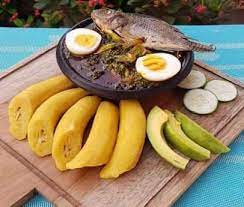

Kontomire Stew and Boiled Plantain

What is Kontomire stew and boiled Plantain
Kontomire stew and boiled plantain is one of the most famous food in the Akan part of Ghana. It is usally sevred with egg, avocado, and salted tilapia called koobi
Kontomire is the leaves of cocoyam. Kontomire is used to make palava stew and various soups in Ghana such as nkate-konto soup and ebunuebunu soup which are eaten with fufu and banku.
Kontomire stew can be eaten with boiled plantain, boiled yam, and boiled rice
What do you need to make this delious meal?
- Plantain
Kontomire or cocoyam leaves
- Koobi or salted tilapia
- Salt
- Water
- Onion
- Palm oil
- Pepper
- Avocado
- Egg
Method
- Peel plantain and boil with enough water.
Add salt, egg, and koobi to the boiling plantain.
- Wash all vegetables
- Wash kontomire and pepper. Boil afterwards
- When the kontomire and pepper are soft, drain the water.
- Gring pepper, onion, and cooked kontomire in Awowa or Asanka. Add salt to taste
- Heat palm oil in a saucepan, add onion and allow to simmer.
- Slice some onion.
- Pour the hot palm oil onto the kontomire and add slice onion
- When the plantain and koobi is soft, drain the water from it.
Pour some cold water onto the plantain in a seperate bowl. Remove the egg shell from the egg.
- Peel avocado and slice it
- Add egg, sliced avocado, and koobi to the kontomire stew
- Drain water from the plantain and place the plantain on a plate
The food is ready. Enjoy!